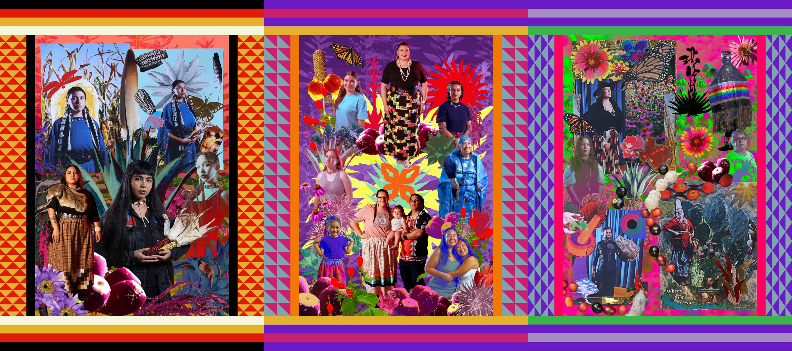
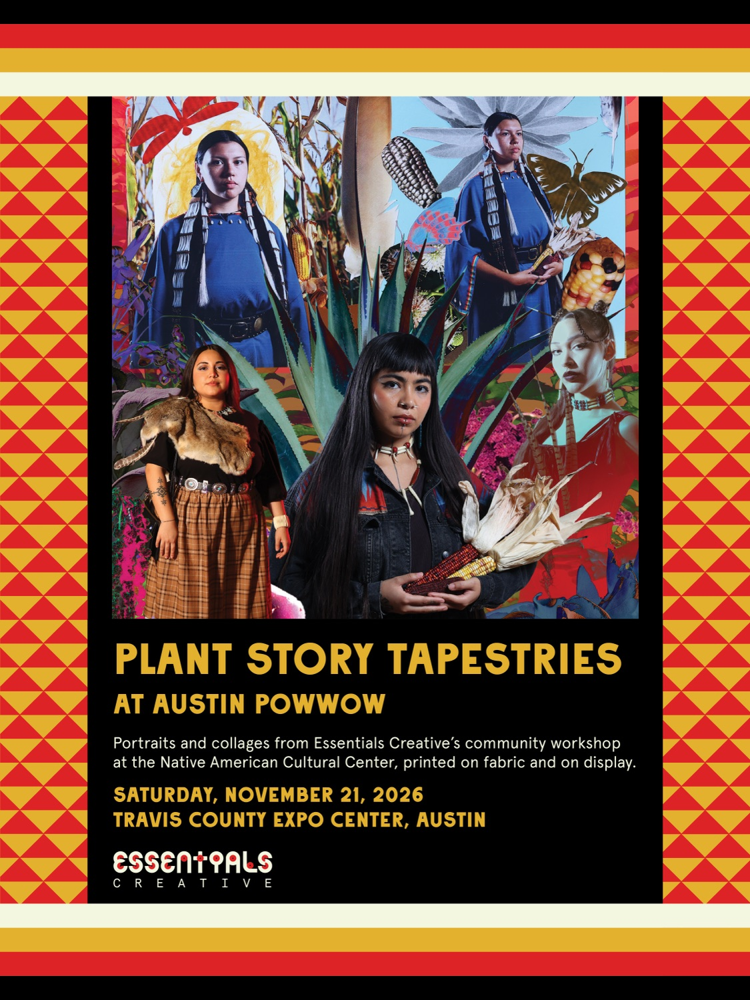

Portrait and collage workshop recap · September 5, 2026
Plant Story Portraits
How do we see ourselves in the plants around us? People gathered at the Native American Cultural Center to make portraits and collages with that question. Here is what we made together.
- Date
- Saturday, September 5, 2026
- Place
- Native American Cultural Center, East Austin

Coming up
Plant Story Tapestries at Austin Powwow
Made from the Plant Story Portraits collage workshop at the Native American Cultural Center. The tapestries will be on display at the Austin Powwow Native Arts & Heritage Festival.
Saturday, November 21, 2026
Travis County Expo Center, Austin

The day
People sat for a studio portrait, printed on the spot. Then they cut into it, layered it, and built a collage with images of native plant photography. Last, each person filled out a Plant Story Card for our research. Everyone took home the printed portrait and the finished collage. We photographed each card first, with permission.
Everyday clothes, traditional dress, and regalia all belonged in the room, and a community potluck filled the table.
On site:
Photographers: Essentials Creative
Makeup and hair: Casa de Ojos — Fabian Alejandro Diaz
Facepaint with cochineal: AuaniCh’ipiri Rojas (they/them/red)
This workshop is part of Plant Story Cards, an ongoing project pairing Indigenous, Latinx, and Asian plant knowledge with community-collected stories.
Portraits
One portrait for each person who sat with us.
Behind the scenes
Cutting, arranging, and making across the room.
Finished collages
The collages people made and took home.
Tapestry designs
Ten designs. The photographs from the workshop inform a series of tapestries and printed fabric designed by Essentials Creative.
Credits
This project is supported in part by a Nexus Grant of Austin Arts, Culture, Music and Entertainment. Plant Story Cards